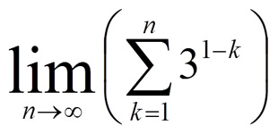
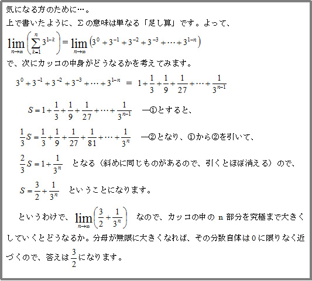

少し前のニュースで…
３月の頭、YOMIURI ONLINEの教育に関する記事で、「女子が理数系を苦手としているのは、生まれつきではない」というものを目にしました。
あ、明らかに女子の方が理数系の科目を苦手としているというデータがあるのね…。
ということで読み進めていくと、
国際学力テストでの理数系の成績は女子生徒が男子より低く、苦手意識も強い。だがそれは教育で改善できる。
経済協力開発機構（ＯＥＣＤ）は５日、こんな分析を含む教育の男女差に関する報告書を発表した。日本も同様の傾向だ。報告書は「学業成績の男女差は生まれつきの能力によるものではない」と結論付けた。報告書は、ＯＥＣＤが２０１２年に行った国際学習到達度調査（ＰＩＳＡ）に参加した６０を超える国・地域の１５歳計約５０万人の成績や、アンケート結果を、男女差に注目して分析した。
それによると、「数学的応用力」、「科学的応用力」の成績はＯＥＣＤ加盟国の平均で２～１０ポイント、男子が女子を上回っていた。日本の１５歳は、男子が女子より１１～１８ポイント高く、平均より男女差があった。また、日本も含め、女子は数学が高得点でも数学に自信がない傾向が強く、エンジニアや、コンピューター関連の仕事を希望する女子は加盟国平均で５％に満たなかった。
報告書は、理数系の成績格差の改善策について、〈１〉親は、学業や将来の志望について、息子にも娘にも偏見を持たずに同じように支援すること〈２〉教師は、女子の読解力の成績が男子より優れていることなどに注目し、女子には数学の問題を一人でじっくり解かせるような「戦略」をたてる――ことなどをあげた。
引用元：読売ONLINE「女子は理数系が苦手…生まれつきではない」
確かに私がアルバイトで塾講師を始めた２０年前には、現場感覚ではっきりと分かるぐらい理数得意率は男子の方が多かった記憶があります。
ただ、ここ数年は性格的にも男子の女子化と女子の男子化してきた（笑）ということも手伝って、性別による理数力の偏りは無くなってきたと感じていました。
だから、いまだに世間一般ではこの傾向が強いという調査結果は、私の中で少し意外だったわけです。
でもまあ、‘リケジョ’という言葉があること自体、まだまだ数学や理科は男子の得意分野という認識が根強いんでしょうね。
私自身の考えとしては、この記事の「生まれつきのものではない」ということに概ね同意です。
ただし、一昔前にも話題になりましたが、男脳・女脳の違いというのはあるのではないか。そのことと学校カリキュラムとの化学反応で、女子が理数系（とりわけ数学）にイマイチ自信が持てない環境になっているのではないかと思っています。
高校で逆転するケース多し
さて、どういうことかと言うとですね…要するに「図形」という分野の出来具合が、‘精神的な’得意不得意を左右しているのではないかと。
先ほどの脳については、今では広く認識されている通り、特に‘空間把握能力’に関して男子の方が長けているという研究結果があるわけです。
脳科学的に言えば、若干男子の方が図形把握に有利と言えるでしょう。
で、この図形というやつが結構やっかいで、いわゆる‘ひらめく’ことが出来るか否かにかかっているようなムードがありますよね。
なおかつ、中学生までの学習カリキュラムは、図形に関連した内容が多い。
だから図形のひらめきで‘数学的センス’があるかどうかを自己判断してしまうのです。
（※ちなみに、「ウチは家系的に文系だから…」という親御さんがいますが、これは現実と関係のない呪いの呪文でしかありません）
ひらめきが重要かどうか。
率直に言うと、そういう側面もあります。ただし、それを理論の理解や自身の努力でカバーすることも可能です。
しかし、やはり小学生などの頃にパッとひらめく同級生を横目に、自分がまったく何をしていいかわからないような経験をしてしまうと、それは苦手意識発動の強烈な引き金になる…わかりますよ、これ。
ところが、高校数学になると面白いことに成績が逆転する現象も珍しくないのです。
そもそもカリキュラムが代数（数と式・関数など）に多くの時間を割くようになります。
図形の知識も扱いますが、それは関数の問題の中で自然に面積の内容が出てきたりするだけで、図形そのものの難解な問いはあまり見られません。
つまり、センスよりも努力が報われやすい環境なのです。
実際に現場で見ていると、中学時代には特に図形で苦戦していて「自分は頭が固いから…」なんて苦手意識のかたまりだった生徒でも、高校からはメキメキと力をつけて他の追随を許さない伸びを見せる場合も珍しくありません。
逆に、中学までは我々も舌を巻くほどの直観力やセンスを見せつけていても、高校数学で必要な緻密で丁寧な作業を敬遠し、どんどん成績が落ちる人もいます。
かくいう私も、図形が大の得意だったので、高校では数学に興味を失った時期もありました。
高校数学は格段にレベルが上がります。
直観も大切ですが、確実な知識や場合分け能力、そして数式の意味していることを把握する‘読解力’の方がより重要になります。
例えばこんな数式があったとします。

多くの人は「うわ～！シグマじゃん、これ意味不明だったよな。しかもlimってなんだよ！」と叫ぶことでしょう。
でもΣ記号は「kに１を入れた数、２を入れた数、３を入れた数…ｎを入れた数までを用意して全部足す」というだけの意味ですし、limは極限、つまり「式のn部分を無限大にでかくしろ」という意味でしかありません。
だから、一つひとつの数式が持つ基本ルールをちゃんと理解して読み解く力があれば大丈夫なんです。
そういう意味では、高校以降の数学ではむしろ記事が述べている通り、いやむしろ女子力こそが大きなアドバンテージを発揮するのではないでしょうか。
というわけで、男女問わず「自分は数学的センスが無い」と思っている人、絶対にそんなことはありません。
理系科目、楽しんで取り組んでみましょう！
